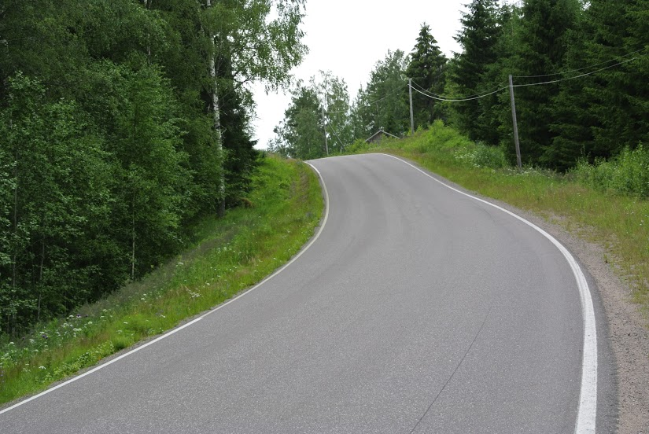
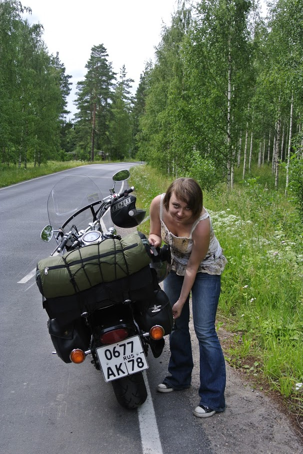
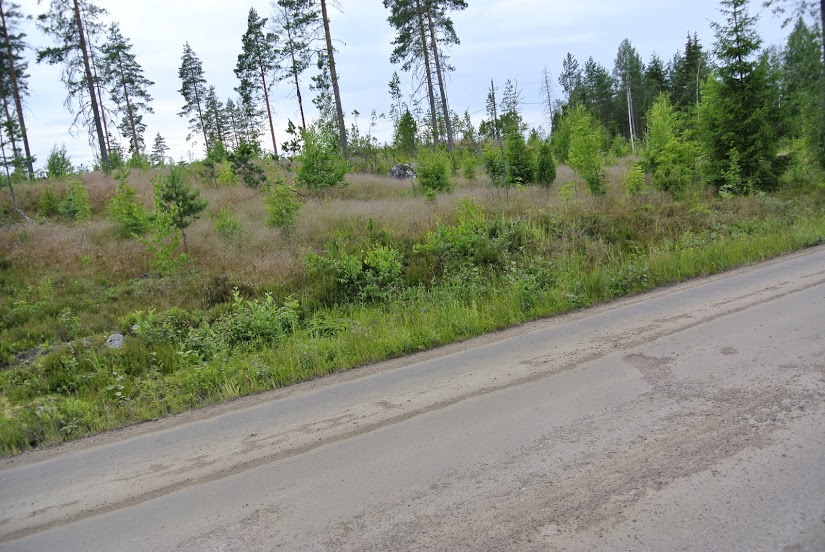

Накануне списался с приятелем-финном, живущим недалеко от границы. Договорились встретиться и катнуть немного.
Первый раз ехал на моце за пределы родины. До этого всё время на велосипеде или общественным транспортом… Границу прошли очень быстро, сравнимо с велосипедом. Очередь глубоко побоку, досмотр тоже отсутствует. Явилось новостью то, что декларировать для временного вывоза мотоцикл не надо. Из всех формальностей остался только паспортный контроль.
Первый час непривычно ехать по знакам. Не больше 80. Потом привыкаешь и даже начинает нравиться. Езда размеренная, спокойная, машин немного. Если сравнить с ездой по России, средняя скорость выходит та же, т.к. здесь едешь 120-140, потом тошнишь за кем-то 60 км/ч. потом снова жжёшь до следующего «тормоза». Нервов тратится больше. Бензину тоже.
Кстати, о бензине — заправился в финке тем, что было. Был 98 неэтилированный и 95 с добавкой 10% этанола. Залил 98-й (евро-5). В общем, то ли бензин такой хороший был, то ли размеренная езда делает чудеса: на баке до резерва я проехал 294км. Это, на минуточку, литровый карбюраторный драгстар. 17л бак, из них 4л резерв. Выходит 4.4л на сотню.
Доехали (был со стюардессой) от Брусничного до Иматры. Финны всё время шпарят с превышением 10-15 км/ч. Сам не рискнул, штрафы больно велики, сцыкатно. В Иматре заехал в Mimoto, купил здоровый сундук на багажник, в который сразу же были засунуты обе мотокуртки — жарко. Магазин советую, выбор очень неплохой, возят по каталогам, общаются весьма благожелательно. Кому важно — оформляют tax free.

Оттуда покатили к приятелю под Йоутсено. У него сейчас олдовый харли и триумф тандербёрд. Харлей прикольный, снимаешь седло, откручиваешь крышку маслобака и видно, как туда масло перетекает из трубочки. Ну и звук, конечно, неподражаемый, да. В компании с Томми на триумфе покатили в Лаппеэнранту, испить кофия в гавани, где тусят местные мотоциклизде. Ехали по второстепенным дорогам, как на первой фотографии. Камер стопудово нет, поэтому жгли как умели, побоку мороз. Дорога петлистая, то горка, то спуск — один раз даже удалось словить секундочку невесомости. Любимая жена пищала от восторга, да и я сам не мог удержаться от улыбки — от уха до уха.

Распрощавшись с Томми, мы поехали уже своей дорогой — малыми дорогами вокруг озера. Lappeenranta — Taipalsaari — Savitaipale — Suomenniemi — Mikkeli — Puumala — Imatra — Lappeenranta.

Друзяки, ездите малыми дорогами, и да будет вам счастье, и впечатления, и кайфов полные штаны! Мало того, что на таких дорогах, в отличие от автобанов, есть где порулить, там и виды открываются потрясающие. И развлечений на жопу найти просто: вот, например, кусок дороги от Savitaipale до Suomenniemi (дорога 409). Очень-очень старый асфальт. Содранный и истёртый. Покрытый крошкой. Но! Ни одной колеи, ямки или ухаба. Зато лулзов — килограммы. Особенно здорово забраться на такой дороге в горку, и обнаружить, что впереди офигенный спуск с одновременным поворотом, усыпанный каменной крошкой и с уклоном самого полотна.

Доехали до Миккели. Долго крутился по городу, пока не нашёл специальную мотопарковку, где моц и оставил, собственно. Парковка на улочке Maaherrankatu, рядом с памятником товарищу Маннергейму. Городок небольшой, но приятный, жалею, что не погуляли там побольше — иначе к месту ночёвки приехали бы весьма поздно, а я и так был с 5 утра на ногах. Видели, пожалуй, только центр города — католический собор, пешеходную аллею, площадь, железнодорожный вокзал да пару улочек с весьма симпатичными домами. Ну да не в последний раз там.

День клонился к вечеру, мы только начинали вторую часть пути — 100км до Иматры через Пуумалу. Дорога опять офигенно красивая, частые мосты и перешейки; красиво.

Однообразие природных красот и количество часов, проведённых в седле, правда, начало меня уже немного доставать, и я начал дурить на дороге — петлять в своей полосе и заниматься прочими непотребствами. Хорошо, что мозг работает как надо в свой тридцать один год — «чувак, вот это вот ты сейчас шалить начинаешь, потому что устал. Прекрати или это может плохо кончиться, ты же не хочешь недоброго ни себе, ни своей жене». После этой мысли Андрей Александрович зевнул пару раз и поехал дальше с постной миной, но зато ровно и спокойно.

Чем ближе к Иматре, тем больше я стал нервничать насчёт топлива. С последней заправки пройдено вот уже скоро 200 км, а на дороге попадаются сплошь автоматические заправочные станции, в которые надо карточку пихать. Женщину вынули — автомат засунули, бывает. Как-то непривычно. В общем, ехал до самой Лаппеэнранты на баке, ровно, соблюдая скоростной лимит 80 км/ч, и доехал. Заправился только в России на Neste под Выборгом. Заодно позавтракали там же.
P.s.: утром проснулись — по палатке барабанил дождик. Ну, дождик — так дождик, что уж поделаешь. Зато лагерь собирается моментально — неохота же мокнуть. Через несколько километров езды джинсы и ботинки стали мокрыми насквозь, внутри хлюпала вода. После пересечения границы вышло солнышко; спустя полчаса-час и штаны, и ботинки высохли: вот тут я почувствовал по-настоящему, насколько офигенно, братюни, на мотоцикле кататься. Это такой клёвый кочевой дзен…
Приятная поездка получилась. Больше 600 километров в день вдвоём — могу. На следующее утро встать и поехать без неудобств — тоже могу. :)